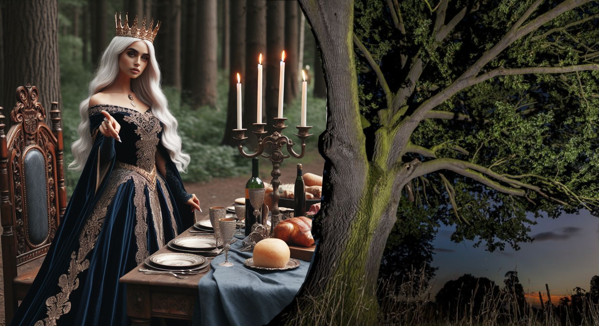

Seven Pillars of Wisdom
Published on 2024-05-20

Unseen Pillars
During the Exodus, the Lord led the people by a pillar of cloud by day and a pillar of fire by night. There was no question about missing those pillars. They were not hidden. If only God's other pillars were so easy to spot! In Proverbs we are told:
Wisdom has built her house;
she has hewn her seven pillars.
- Proverbs 9:1
Opinions about the seven pillars range from the number seven merely indicating the completeness and perfection of wisdom's work to them being the seven spirits of God (which is close), to creative sets of concepts proposed by people down through the ages. If my experience is any guide, the number seven is a good clue to help you decide if you have found them, but a bad clue to guide you on that quest.
I was not searching for the seven pillars. I was merely searching for wisdom. It was only once I had found them, counted what I had found and realized what they were that I knew I had found them. Looking back, I can see some of what it took to do that.
You must first be introduced to each pillar separately. Next, you must bury each one deep, with painful longing and desperation. Then you must feed your dreams and imagination on their images and ideas. After that, you must study them with exactitude. Only after all this and even more that I do not understand will the whole become visible from the parts.
My introduction to Matthew was when I volunteered to deliver the sermon for my high school graduation at a local church. The text was from the Sermon on the Mount. Then in college, after drifting away from the Catholic Church, I read Revelation (which terrified me) and Psalm 23 (which comforted me). I sang "songs in the night" in my dorm room to keep from crying myself to sleep from despair and loneliness, which would one day connect me to Job. The final paper I wrote in college was to compare the gospels of Matthew and John, which deepened my understanding of Matthew. Shortly after that, I read from Proverbs every day for six months, then from the other wisdom books (Job, Psalms, Ecclesiastes, Song of Songs) for the next six.
The burying phase included memorizing the whole sermon on the mount and trying so hard to figure out Revelation that I was plagued with nightmares for over a year. The only way out of those nightmares was to meditate on the Psalms. As for the House of Mourning from Ecclesiastes, I lost many things and learned to trust that Jesus was sufficient.
I fed my dreams on these books when I began to write poems and novels. I filled my stories with imagery drawn from the books, like making the House of Mourning into a counseling center, pictures from Psalm 119 into statues along a deadly road, and the pillars themselves as the "Ten Pillars of Life" lining the road to the final judgment. My hero was struck by the seven thunders of Revelation 10 and my best poem was drawn from the story in Matthew of the woman anointing Jesus with perfume and parables of the pearl of great price and the treasure in a field.
After that, I poured my heart into writing theology, first searching for the heavenly treasures Jesus spoke of in Matthew, then for resilience to survive trials by analyzing Job. After Job it was back to Matthew to understand how a person can produce a spiritual harvest, then on to Ecclesiastes. At that point everything sped up. Each time I thought I was finished writing that book, tbe Holy Spirit would press in on me, compelling me to look at another of the seven pillars. For example, I was intentionally not touching Revelation 10, which describes the Voice of the Seven Thunders, a great mystery that I feared would suck me in. I had had a satisfying summer of spiritual discovery, then suddenly everything felt sour. Nothing in my life could explain the emotion. I was baffled. I pondered what it might be and was reminded of John in Revelation, when he swallowed a scroll that tasted like honey in his mouth but made his stomach sour. I looked the passage up. It was in Revelation 10! With reluctance, I plunged in and was rewarded by new insights.
Using different prods, the Lord pushed me to study Proverbs, Song of Songs and Psalms, with each contributing another appendix to my work. Only after the Spirit had pushed me to scrutinize all seven books did I discover that they all follow both Jesus' Harvest Pattern and Solomon's Growth Pattern. Then I discovered that they were ordered according to Jesus' pattern. Only after all these connections became clear and the number of books that followed these patterns was seven, did it dawn on me that I had discovered the Pillars of Wisdom.
The Holy Spirit, without speaking a word, helped me excavate seven pieces, then stepped back to see if I could assemble them into a complete jigsaw puzzle. Let me tell you, nothing in my prior life remotely prepared me for the experience. How can a being silently communicate so much in so short a time? How can I find detailed answers that were not dictated to me as though they were?
The preceding is a mangled and abbreviated account of the mystical experiences that guided me to the answers that my heart was seeking. I had dreams. I had visions. I had longings and prayers and miraculous healings and things harder to categorize. All these experiences guided me. However, though the truths were discovered via mystical means, they can be defended using solid logic and textual analysis. The seven books that constitute the Seven Pillars of Wisdom share many connections that tie them together, connections that they do not share with other books. It is this multitude of connections - not strange religious experiences - that prove the unity and identity of the Seven Pillars of Wisdom.
The seven articles in this section are sliced out of "Appendix H: Clues to the Seven Pillars" from Peace, like Solomon Never Knew. The original plan was to include one article per pillar book. That is how you describe the parts of a thing, but people already are good at looking at the parts of Lady Wisdom's house as separate things. What is needed is a holistic view that shows their unity. A holistic view will show you what you do not know: how to see a house where before you just saw a heap of building materials. Therefore each article shows one facet of unity that ties the books together. Because they are drawn from a single appendix, they make more sense if you read them in the order listed here. So get ready for the seven themes that unite the Seven Pillars. One caveat, first. The Seven Pillars have a special ordering, given to them by Jesus' Harvest Pattern:
- Psalms
- Job
- Proverbs
- Song of Songs
- Ecclesiastes
- Matthew
- Revelation
This order would dictate that the seven themes also have a proper order - which they do - but it has not been followed. I do not know why I ordered the themes the way I did; that's just the way it came out as I was writing...
Clues to the Seven Pillars
Jesus in Matthew 13 spoke of a man who found a treasure in a field, then sold all he had and bought that field. When that man rose from bed that morning to take his stroll, he had no clue what lay in store. When I realized that I had discovered the identity of the Seven Pillars of Wisdom, I felt like that man. Like any curious mystery novel fan, I then went back to see what clues I had missed.
I missed hundreds! This appendix is for more skeptical readers, to persuade them that the conclusions are solid, and that God declared in His Word that He set aside our present time in history to reveal this information to His church. The clues shall be arranged into seven categories:
- Swords
- Books
- Pillars
- Songs
- Spirits
- Treasures
- Thunders
The categories are ordered by time. At the start of history came the first miraculous use of swords, in Eden. When Adam and Eve were expelled, two angels wielding flaming swords barred the way back. The first book of the Bible to be written was Job, who lived before Moses. Then during the Exodus, God led the people by a pillar of cloud by day and a pillar of fire by night. While Moses composed a few Psalms, the key song writer was to follow him: King David. The Holy Spirit was poured out at Pentecost. Then the treasures of wisdom and knowledge that the apostles and prophets spoke of arrived in the form of the Reformation, Enlightenment, Age of Reason and Scientific Revolution. Lastly, the seven thunders which spoke to John in Revelation will speak again, when no one shall need for them to be written down, for the whole world will hear each syllable.
Why these categories? Others might do, but wisdom does not blossom as an external force. It is a spring welling up from within. These are the categories that captured and guided me across the decades of my life. These are the facets of wisdom that touched me personally and enabled me to recognize the pillars in the end.
Take swords. As a Catholic child, my first confession to the priest was to apologize for threatening my little brother with a sword. (It was a real sword!) Then in my novel Fighting Extradition, a book with a sword on its spine destroyed an evil army as each page tore free and folded itself into a dagger wielded by the spirit. Lastly, in my novel A Most Refined Dragon, the angels from Eden made an appearance, swords in hand.
What about books? As a kid, all I wanted to do was read. When I graduated high school, all I asked for graduation was a Bible – and my parents didn’t get me one. Meditating on, memorizing and praying through its pages set me free from barrenness, fear of death, depression and anxiety. Then a switch flipped and all I wanted to do was write books of my own. In my first novels, pages from law books in the afterlife possessed miraculous powers.
I had my own pillars. As a child, I had a recurring dream that hidden beneath the rubble of a barn on our property was an ancient temple with marble pillars. For my first novels I selected ten pillars of life as the moral and legal framework for purgatory. I added two more pillars when I wrote The Endless Hunt. Not seven and not the same list, but my focus on pillars had begun.
Songs in the night. I loved being in choirs growing up and my first mission trip to Romania was as part of a gospel choir. As previously related, in college I sang songs in my bed to keep from crying myself to sleep, which made me seize hold of Job when I read Elihu’s words about God giving us “songs in the night”. Meditating on Habakkuk’s song every day for 18 months gave me the perseverance to finish my college thesis and graduate. And in one novel of mine, a man embarks on a dangerous quest to find a song, accompanied by a Zoroastrian seeking his faith’s blessed House of Song.
The Spirit. Wisdom is one of the Seven Sprits of God, and I devoted a solid year to praying every day for Wisdom. Isaiah lists the Seven Spirits of Wisdom so it is no surprise that it was to Isaiah that I turned when an evil spirit of nightmares afflicted me for over a year. I also turned to the Psalms. Just as Saul was afflicted by an evil spirit and could only be calmed by David’s songs, so I found solace in the shepherd king’s lyrics.
Treasures. Betrayed by his wife, the former owner of our farm buried his treasure and hung himself in the cattle barn. Years later some thieves who robbed Western Union hid their loot on our property before being caught. They died in prison. We never found either treasure. As a young Christian, a year during which I lost much that I treasured ended with me writing a song that included the words “so sell your stuff and buy that field”, a reference to Jesus’ parable from Matthew 13. About that time, I studied the Sermon on the Mount and pondered a question that would stump me for decades. “What are the spiritual treasures we are supposed to lay up in heaven?” Researching and writing The Endless Hunt was part of my ongoing search.
You see, the search for wisdom must take hold of your imagination and intuition, your hobbies and habits, and fasten itself to your deepest desires, else you will not progress very far. Now let’s see what secrets these categories reveal when we examine them logically.
Each category touches all seven pillars, tying them together, except the thunders which appear in only half. Nevertheless, each category has a close affinity to one of the pillars. Also, each pillar is most closely affiliated with one of the Seven Spirits of God. Here are some of the associations:
It is time to tackle each category, but in a different order...
Here are the seven common themes shared by the Seven Pillars of Wisdom, in the order that they appeared in "Appendix H: Clues to the Seven Pillars":
- Theme of Books
- Theme of Swords
- Theme of Pillars
- Theme of Thunders
- Theme of Spirits
- Theme of Songs
- Theme of Treasures
As you read the sections of this article given above, you will see that the connections between these books are not lines in a mathematical proof. They are not evidence in a court case. They are insights into questions whose answers many people have sought for long and hard. One section even has something to say about the rapture!
The final section, Theme of Treasures, concludes with a final wrap up for all the themes.